Account
To manage your projects in a decentralized way using the DAO, you will need to organize all the necessary components in a Repository on GOSH.
But to get started, you need to create your GOSH Account.
Create Account
To start registering on GOSH, simply visit the GOSH website and click Create account:
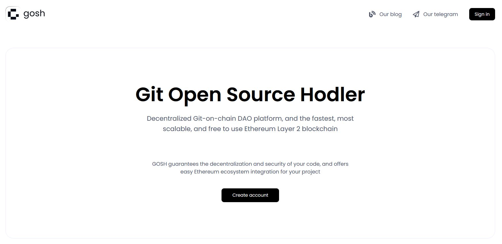
Use one of the suggested methods:
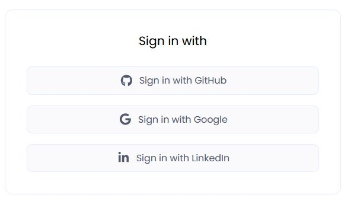
with GitHub
Use your Github account to sign up for GOSH.
To do this,enter your username or email address and password and click Sign in button:
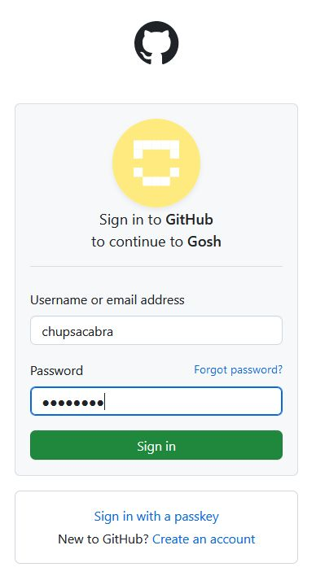
and complete the authentication.
Info
The special GOSH DAO Bot will help with registration in GOSH. It will deploy your DAO and upload your selected repositories to GOSH.
In the list of organizations received from Github, select the organization from which you want to make a DAO on GOSH

and then select repositories for upload into GOSH.

Do this for each organization for which you want to upload repositories to GOSH.
Danger
After registering on GOSH you will not be able to return to this step in this release.
This will be available later
Info
If you want other GOSH users to be able to find you by your email, give permission.
Then click Upload

If you are familiar with blockchain, you know what to do with a seed phrase.
If you're new to blockchain, all you need to know is that this is the key to your Account and all your assets on GOSH. Your public key, which can identify you on the blockchain and the secret key you'll use to sign your actions can always be calculated from your seed phrase.
To create the GOSH Account, the seed phrase will be generated for you. If you already have the GOSH Account, click Clear and enter your own one seed phrase.
Info
Your seed phrase will be used to log into GOSH.
Danger
Write your seed phrase down and store it somewhere safe, and never share it with anyone. Avoid storing it in plain text or screenshots, or any other non-secure way. If you lose it, you lose access to your assets. Anyone who gets it, gets full access to your assets.
Once you have written down your seed phrase, click Continue.

Then choose your username in GOSH. This is your unique cryptographic identifier in GOSH.
Danger
Please note that after creating your username it will be impossible to change it in the future.
if your username is already taken, please choose another one.
Warning
The username must contain only Latin letters, numbers, hyphen, underscore character ( a...z, 0...9, -, _ )
And click Create account.

When entering the GOSH will ask you to set up a PIN code:
Info
Set a new PIN code for each new session.

And unlock with PIN code.
Warning
If the name of the organization or repository already exists, you will receive the message. Change the name, click save changes and confirm the action with a pin code.

The Organizations page will open after your Account is created.

Info
When the repositories are uploaded, a notification will be sent to your email.
Follow the link in the letter.

Enter the saved seed phrase and click Sign in.
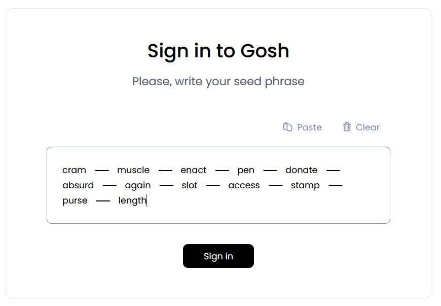
Also set up a PIN code and unlock with PIN code.
You can also ensure continuous synchronization of your GitHub and GOSH repositories.
To do this you can use GOSH GitHub Sync.
with Google
You can use your Google account to sign up for GOSH click Sign in with Google
Then,enter your email address or phone number and click Next button:
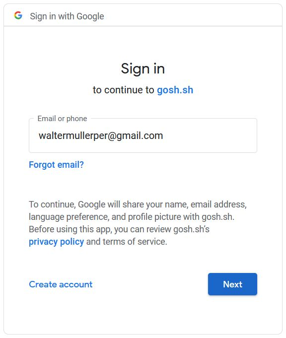
Confirm the selection with a password and proceed to the next step by clicking Next
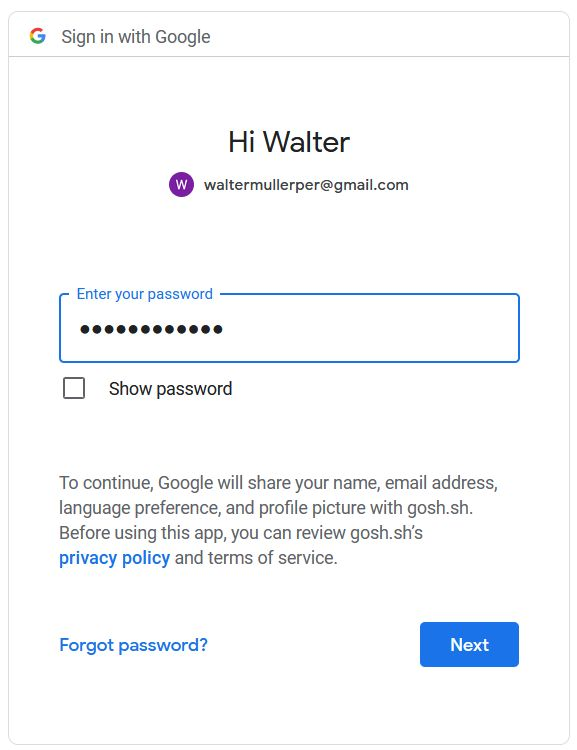
Specify the email address that is convenient for you to work with GOSH.
Then choose your username in GOSH. This will be your unique cryptographic identifier in GOSH.
Danger
Please note that after creating your username it will be impossible to change it in the future.
if your username is already taken, please choose another one.
Warning
The username must contain only Latin letters, numbers, hyphen, underscore character ( a...z, 0...9, -, _ )
then click Continue
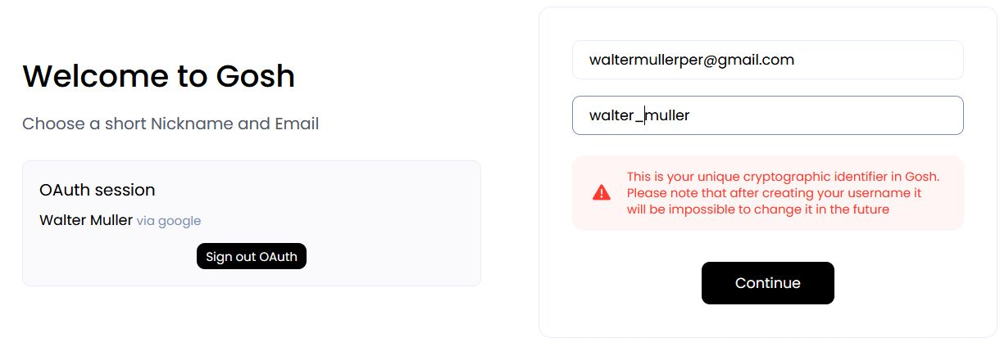
On the next step, you will be offered the generated seed phrase.
If you are familiar with blockchain, you know what to do with a seed phrase.
If you're new to blockchain, all you need to know is that this is the key to your Account and all your assets on GOSH. Your public key, which can identify you on the blockchain and the secret key you'll use to sign your actions can always be calculated from your seed phrase.
To create the GOSH Account, the seed phrase will be generated for you. If you already have the GOSH Account, click Clear and enter your own one seed phrase.
Info
Your seed phrase will be used to log into GOSH.
Danger
Write your seed phrase down and store it somewhere safe, and never share it with anyone. Avoid storing it in plain text or screenshots, or any other non-secure way. If you lose it, you lose access to your assets. Anyone who gets it, gets full access to your assets.
Once you have written down your seed phrase, check the box and click Continue
Then, please enter the required words from your phrase, separated by a space, to make sure that it is spelled correctly, and click Create Account
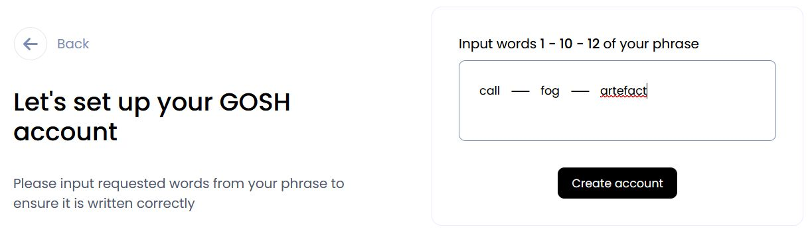
When entering the GOSH will ask you to set up a PIN code:
Info
Set a new PIN code for each new session.
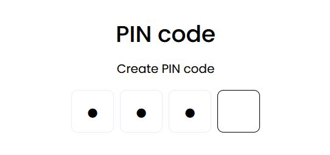
And unlock with this PIN code.
Congratulations, your GOSH account has been created.
It remains to create a your first DAO. To do this, click on Create DAO and complete
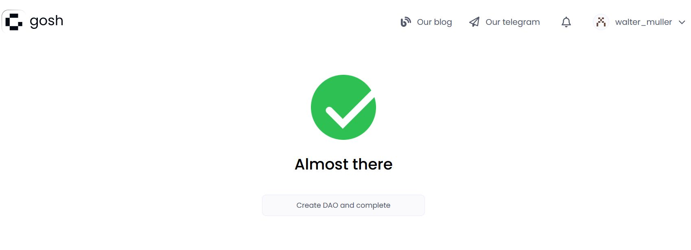
On the page that opens, click on your DAO to open. A description of further work with DAO can be seen here
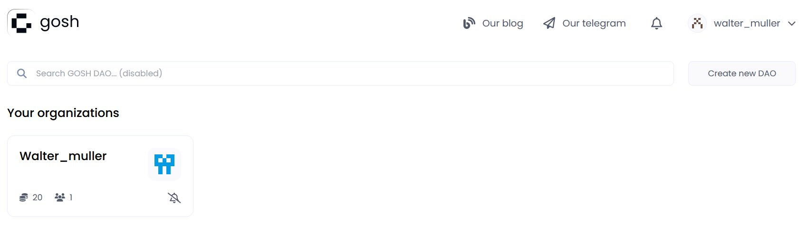
You can synchronize your GitHub repositories with GOSH, which allows you to work with both platforms side by side. To do this you can use GOSH GitHub Sync.
with Linkedln
Use your Linkedln account to sign up for GOSH.
To do this,enter your email address and password and click Sign in button:
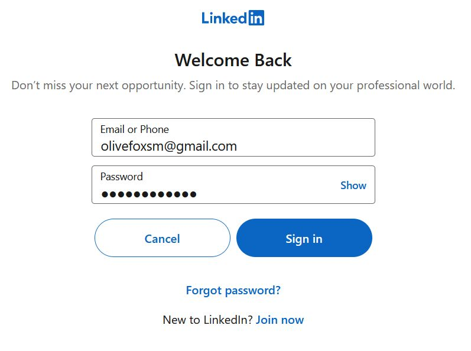
Click on the Allow button to grant permission for the use of your data
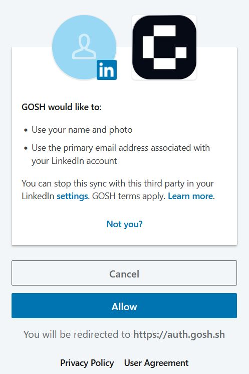
Specify the email address that is convenient for you to work with GOSH.
Then choose your username in GOSH. This will be your unique cryptographic identifier in GOSH.
Danger
Please note that after creating your username it will be impossible to change it in the future.
if your username is already taken, please choose another one.
Warning
The username must contain only Latin letters, numbers, hyphen, underscore character ( a...z, 0...9, -, _ )
then click Continue
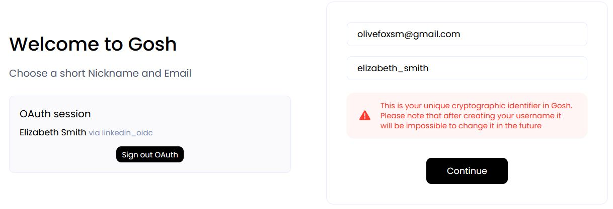
On the next step, you will be offered the generated seed phrase.
If you are familiar with blockchain, you know what to do with a seed phrase.
If you're new to blockchain, all you need to know is that this is the key to your Account and all your assets on GOSH. Your public key, which can identify you on the blockchain and the secret key you'll use to sign your actions can always be calculated from your seed phrase.
To create the GOSH Account, the seed phrase will be generated for you. If you already have the GOSH Account, click Clear and enter your own one seed phrase.
Info
Your seed phrase will be used to log into GOSH.
Danger
Write your seed phrase down and store it somewhere safe, and never share it with anyone. Avoid storing it in plain text or screenshots, or any other non-secure way. If you lose it, you lose access to your assets. Anyone who gets it, gets full access to your assets.
Once you have written down your seed phrase, check the box and click Continue
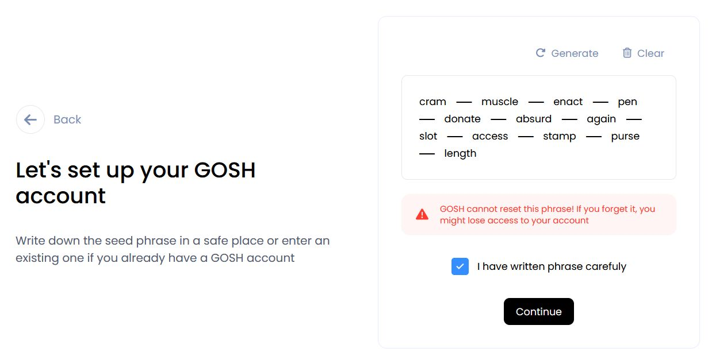
Then please input the requested words from your phrase to ensure it is written correctly and click Create account
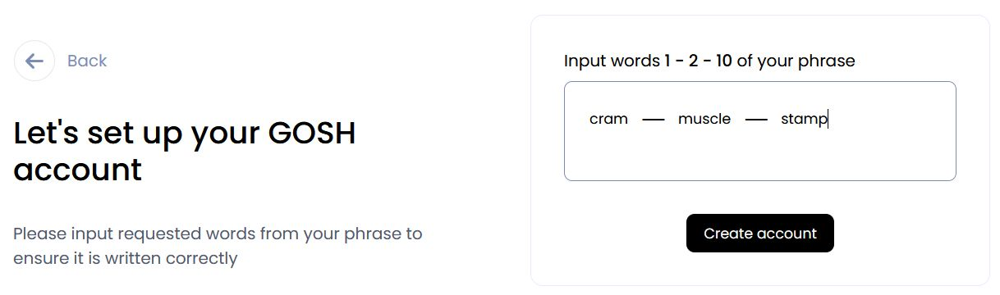
When entering the GOSH will ask you to set up a PIN code:
Info
Set a new PIN code for each new session.
And unlock with this PIN code.
Congratulations, your GOSH account has been created.
It remains to create a DAO. To do this, click on Create DAO and complete
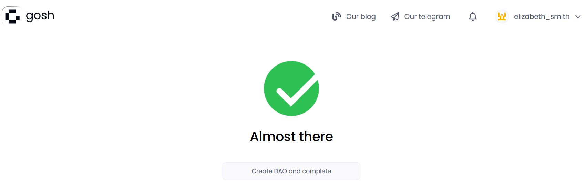
On the page that opens, click on your DAO to open. A description of further work with DAO can be seen here
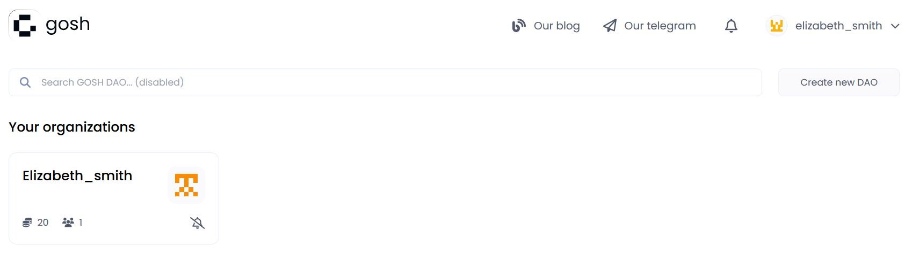
You can synchronize your GitHub repositories with GOSH, which allows you to work with both platforms side by side. To do this you can use GOSH GitHub Sync.
View Public Key
A user needs to know their public key, for example, when joining an organization.
To view your public key go to the main page of your Account and click Settings.
Danger
Avoid storing your private key and seed phrase in plain text or screenshots, or any other non-secure way. If you lose it, you lose access to your assets. Anyone who gets it, gets full access to your assets.